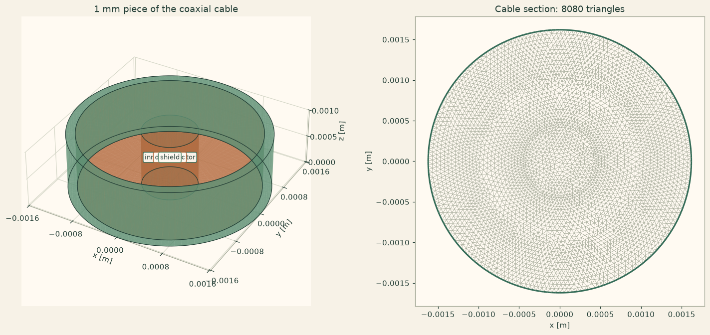

Docs › Examples › Transmission line parameters: coaxial cable and twin lead
Electrostatics, magnetostatics, eddy currents · 2D
Transmission line parameters: coaxial cable and twin lead
Capacitance, inductance and frequency-dependent resistance per metre of an RG-58 class coaxial cable and a 300-ohm twin lead.
Run locally with OneSimulation. The example downloads are free. Running them requires an activated runtime. Runtime Alpha 0.2.1a7 · CPython 3.13 on macOS (Apple Silicon), Ubuntu 22.04 (x86-64), and Windows x64. Installation and activation · View pilot plans. Scope of the reference checks.

What it computes
OneSimulation cuts the cross-sections from STEP parts and solves three 2D problems with quadratic elements: electrostatics for C', magnetostatics with uniform go and return currents for the DC inductance from the field energy, and the time-harmonic eddy-current model with massive conductors for R'(f) and L'(f) from 1 kHz to 1 MHz. The meshes follow the conductor outlines. The script that builds the STEP file comes with the notebook.
What it checks
C' matches 2 pi eps/ln(b/a) and pi eps0/arcosh(D/2a) within 0.002 % and 0.010 % (105.74 and 10.29 pF/m), L'_DC the closed forms within 0.13 % and 0.17 % (293.2 and 1181 nH/m); at 1 kHz R' = 38.95 mOhm/m equals the DC resistance, R' rises to 126.4 mOhm/m at 1 MHz (-0.47 % against the Bessel and thin-shield skin formula) while L' falls from 293.6 to 256.0 nH/m (+0.01 %).
Geometry
The notebook starts at the import of the CAD files transmission_line_parameters.step, transmission_line_parameters_coax_dielectric.step, transmission_line_parameters_coax_inner.step, transmission_line_parameters_coax_shield.step, transmission_line_parameters_twin.step, transmission_line_parameters_twin_air.step, transmission_line_parameters_twin_minus.step, transmission_line_parameters_twin_plus.step: STEP (AP242), readable by any CAD program, with the names of the faces that the boundary conditions use. Put them next to the notebook.

The geometry script
The script transmission_line_parameters_geometry.py builds the geometry with the CAD objects of OneSimulation and writes the files. Change a dimension there, run it, and run the notebook again.
"""Geometry of the OneSimulation example "Transmission line parameters: coaxial cable and twin lead".
Builds 1 mm long pieces of two transmission lines with the CAD objects of OneSimulation.
Coaxial cable (RG-58 class): inner conductor of radius 0.45 mm, polyethylene dielectric to 1.47 mm,
copper shield 0.15 mm thick. Files: transmission_line_parameters.step (the whole cable, the domain
of the magnetic model), _coax_dielectric.step (the electrostatic domain), _coax_inner.step and
_coax_shield.step (the two conductors).
Twin lead: two wires of radius 0.5 mm, 7.5 mm apart, in air inside a cylinder of 375 mm radius.
Files: _twin.step (the air cylinder with the wires, the magnetic domain), _twin_air.step (the air
with the wires cut out, the electrostatic domain), _twin_plus.step and _twin_minus.step (the wires).
"""
from onesim.cad.d3 import AnnularCylinder, Cylinder
mm = 1e-3
inner, dielectric, shield, length = 0.45 * mm, 1.47 * mm, 1.62 * mm, 1.0 * mm
Cylinder(radius=shield, length=length).save("transmission_line_parameters.step")
AnnularCylinder(inner_radius=inner, outer_radius=dielectric, length=length).save(
"transmission_line_parameters_coax_dielectric.step"
)
Cylinder(radius=inner, length=length).save(
"transmission_line_parameters_coax_inner.step"
)
AnnularCylinder(inner_radius=dielectric, outer_radius=shield, length=length).save(
"transmission_line_parameters_coax_shield.step"
)
wire, spacing, outer = 0.5 * mm, 7.5 * mm, 375 * mm
plus = Cylinder(radius=wire, length=length, origin=(spacing / 2, 0.0, 0.0))
minus = Cylinder(radius=wire, length=length, origin=(-spacing / 2, 0.0, 0.0))
Cylinder(radius=outer, length=length).save("transmission_line_parameters_twin.step")
(
Cylinder(radius=outer, length=length) - plus.named("plus") - minus.named("minus")
).save("transmission_line_parameters_twin_air.step")
plus.save("transmission_line_parameters_twin_plus.step")
minus.save("transmission_line_parameters_twin_minus.step")The notebook
The complete notebook, cell by cell. Run it to produce the figures and the comparison printout.
A transmission line is described by its distributed parameters per metre: capacitance \(C'\), inductance \(L'\), resistance \(R'\) and conductance \(G'\). Capacitance and the direct-current inductance are properties of the cross-section alone and follow from two 2D field problems:
- electrostatics, \(-\nabla\cdot(\varepsilon\nabla V)=0\) between the conductors held at a voltage \(U\); the charge per metre gives \(C'=Q'/U\);
- magnetostatics, \(-\nabla\cdot(\mu_0^{-1}\nabla A_z)=J_z\) with the go and return current \(\pm I\) spread uniformly over the conductors; the field energy per metre gives \(L'=2W'/I^2\).
Two lines are computed. The coaxial cable has an inner conductor of radius \(a=0.45\) mm, a polyethylene dielectric (\(\varepsilon_r=2.25\)) to \(b=1.47\) mm and a copper shield to \(c=1.62\) mm. The twin lead has two wires of radius \(a=0.5\) mm with axes \(D=7.5\) mm apart in air; its field extends far out and is cut off by a circle of 375 mm radius.
At higher frequencies the current crowds to the conductor surfaces (skin effect): \(R'\) rises and \(L'\) falls towards its external part. For the coaxial cable this is computed with the eddy-current model of OneSimulation from 1 kHz to 1 MHz.
The cross-sections are the sections of the 1 mm long parts in transmission_line_parameters.step (whole cable) and transmission_line_parameters_coax_dielectric.step, _coax_inner.step, _coax_shield.step, _twin.step, _twin_air.step, _twin_plus.step and _twin_minus.step. The script transmission_line_parameters_geometry.py builds them with the CAD objects of OneSimulation.
Reference. For the coaxial cable (e.g. Ramo, Whinnery and Van Duzer, Fields and Waves in Communication Electronics, 3rd ed., Sec. 4.5)
and for the twin lead with uniform currents in its wires
import numpy as np
from onesim.cad.exchange import load
from onesim.materials import VacuumPermeability, VacuumPermittivity
from onesim.meshing import TriangularMesher
from onesim.numerics import Numerics
from onesim.numerics.fem import FiniteElement, Lagrange
from onesim.numerics.linear import ComplexSparseDirect, SparseDirect
from onesim.physics.electrostatics import FixedPotential, PoissonEquation
from onesim.physics.magnetostatics import (
Coil,
EddyCurrents,
MagneticInsulation,
Magnetostatics,
RegionCurrent,
coil_impedance,
joule_losses,
magnetic_energy,
)
from onesim.simulation import Problem, Simulation, regionwise
from onesim.visualization import plots, theme
from scipy.special import jv
theme.set()Geometry and mesh
section cuts every part at half length. The electrostatic domains have the conductors as holes; in the magnetic domains the mesh follows the conductor outlines (embedded_regions). The triangles are small at the conductors and grow outwards.
mid = lambda name: load(f"transmission_line_parameters{name}.step").section(
(0, 0, 1), origin=(0, 0, 0.0005)
)
cable, dielectric, inner, shield = (
mid(""),
mid("_coax_dielectric"),
mid("_coax_inner"),
mid("_coax_shield"),
)
twin, twin_air, plus, minus = (
mid("_twin"),
mid("_twin_air"),
mid("_twin_plus"),
mid("_twin_minus"),
)
a, b, c = inner.size[0] / 2, dielectric.size[0] / 2, cable.size[0] / 2
wire = plus.size[0] / 2
D = plus.bounding_box[0][0] - minus.bounding_box[0][0]
meshes = {
"coax electric": TriangularMesher(target_size=(b - a) / 12, refinements=1).generate(
dielectric
),
"coax magnetic": TriangularMesher(
target_size=(c - b) / 3,
embedded_regions=(inner.named("inner"), shield.named("shield")),
).generate(cable),
"twin electric": TriangularMesher(
target_size=0.02,
grading=0.25,
local_sizes={"plus.outer_wall": wire / 4, "minus.outer_wall": wire / 4},
).generate(twin_air),
"twin magnetic": TriangularMesher(
target_size=0.02,
grading=0.25,
embedded_regions=(plus.named("plus"), minus.named("minus")),
region_sizes=(("plus", wire / 4), ("minus", wire / 4)),
).generate(twin),
}
fig = plots.figure(1, 2, size=(14, 6))
plots.geometry(
[
load("transmission_line_parameters_coax_inner.step").named("inner conductor"),
load("transmission_line_parameters_coax_dielectric.step").named("dielectric"),
load("transmission_line_parameters_coax_shield.step").named("shield"),
],
camera=plots.Camera(elevation=35, azimuth=-60),
title="1 mm piece of the coaxial cable",
ax=fig[0],
)
plots.mesh(
meshes["coax magnetic"],
groups=("all",),
legend=False,
title=f"Cable section: {meshes['coax magnetic'].cell_count} triangles",
ax=fig[1],
)
plots.show()Capacitance
Coax: inner conductor at 1 V, shield grounded. Twin lead: wires at \(\pm0.5\) V, the far circle at 0 V. The charge per metre is the reaction of the potential on the conductor surface.
eps0, mu0 = float(VacuumPermittivity().evaluate()), float(
VacuumPermeability().evaluate()
)
numerics = Numerics(
spatial=FiniteElement(element=Lagrange(order=2), quadrature_order=4),
linear_solver=SparseDirect(),
)
electric = {
"coax": (
dielectric,
regionwise((), default=2.25 * eps0, unit="F/m"),
(("inner_wall", 1.0), ("outer_wall", 0.0)),
"inner_wall",
),
"twin": (
twin_air,
regionwise((), default=eps0, unit="F/m"),
(("plus.outer_wall", 0.5), ("minus.outer_wall", -0.5), ("outer_wall", 0.0)),
"plus.outer_wall",
),
}
capacitance = {}
for line, (section, permittivity, voltages, charged) in electric.items():
model = PoissonEquation(
domain=section.domain(), permittivity=permittivity, charge_density=0.0
)
result = Simulation(
problem=Problem(
name=f"{line} capacitance",
geometry=section,
physics=(model,),
boundary_conditions=tuple(
FixedPotential(
boundary=section.boundaries[side], physics=model, value=value
)
for side, value in voltages
),
),
mesh=meshes[f"{line} electric"],
numerics=numerics,
).solve_stationary()
capacitance[line] = (
result.field(model.potential).reaction(section.boundaries[charged]) / 1.0
)Inductance
The go current \(+1\) A flows in the inner conductor (coax) or the right wire (twin lead), the return current \(-1\) A in the shield or the left wire, each spread uniformly over its section. The far boundary is magnetically insulated, \(A_z=0\).
current = 1.0
magnetic = {
"coax": (
cable,
((inner, current, np.pi * a**2), (shield, -current, np.pi * (c**2 - b**2))),
),
"twin": (
twin,
((plus, current, np.pi * wire**2), (minus, -current, np.pi * wire**2)),
),
}
inductance = {}
for line, (section, conductors) in magnetic.items():
model = Magnetostatics(
domain=section.domain(),
permeability=VacuumPermeability(),
current_sources=tuple(
RegionCurrent.axial(region, value, area=area, within=section.domain())
for region, value, area in conductors
),
)
result = Simulation(
problem=Problem(
name=f"{line} inductance",
geometry=section,
physics=(model,),
boundary_conditions=(
MagneticInsulation(boundary=section.boundaries.all, physics=model),
),
),
mesh=meshes[f"{line} magnetic"],
numerics=numerics,
).solve_stationary()
inductance[line] = 2 * magnetic_energy(result, model) / current**2
if line == "coax":
coax_field = result.field(model.magnetic_flux_density)Results
exact = {
"coax": (
2 * np.pi * 2.25 * eps0 / np.log(b / a),
mu0
/ (2 * np.pi)
* (
np.log(b / a)
+ 0.25
+ c**4 / (c**2 - b**2) ** 2 * np.log(c / b)
- (3 * c**2 - b**2) / (4 * (c**2 - b**2))
),
),
"twin": (
np.pi * eps0 / np.arccosh(D / (2 * wire)),
mu0 / np.pi * (np.log(D / wire) + 0.25),
),
}
print(
"line C' [pF/m] closed form deviation L'_DC [nH/m] closed form deviation"
)
for line in exact:
print(
f"{line:12s} {1e12 * capacitance[line]:11.3f} {1e12 * exact[line][0]:13.3f} {100 * (capacitance[line] / exact[line][0] - 1):+10.3f} %"
f" {1e9 * inductance[line]:14.3f} {1e9 * exact[line][1]:13.3f} {100 * (inductance[line] / exact[line][1] - 1):+10.3f} %"
)
external = {
"coax": mu0 / (2 * np.pi) * np.log(b / a),
"twin": mu0 / np.pi * np.arccosh(D / (2 * wire)),
}
for line in exact:
print(
f"{line}: characteristic impedance at high frequency sqrt(L'_ext / C') = {np.sqrt(external[line] / capacitance[line]):.2f} ohm; "
f"the conductors add {100 * (inductance[line] / external[line] - 1):.1f} % to L' at DC"
)Skin effect: R' and L' over frequency
The eddy-current model EddyCurrents solves the time-harmonic equation \(-\nabla\cdot(\mu_0^{-1}\nabla A_z)+\mathrm j\omega\sigma A_z=J_{s}\) in the copper of the cable (\(\sigma=5.8\cdot10^7\) S/m). The inner conductor and the shield are massive conductors carrying \(+1\) A and \(-1\) A, so the current is free to crowd to their facing surfaces. The mesh follows both conductor surfaces (embedded_regions) and is fine enough for the skin depth at 1 MHz (66 µm). The resistance follows from the Joule loss, \(R'=2P'/I^2\), the inductance from the reactive part of the conductor impedances, \(L'=\operatorname{Im}(Z'_\mathrm{inner}+Z'_\mathrm{shield})/\omega\).
Reference. The inner conductor has the exact internal impedance of a round wire, \(Z'_i=\frac{k\,J_0(ka)}{2\pi a\sigma J_1(ka)}\) with \(k=\sqrt{-\mathrm j\omega\mu_0\sigma}\); the thin shield is well described by a plane sheet of thickness \(t=c-b\) with the field on one side, \(Z'_s=\frac{1+\mathrm j}{2\pi b\,\sigma\delta}\coth\frac{(1+\mathrm j)t}{\delta}\), \(\delta=\sqrt{2/(\omega\mu_0\sigma)}\) (Ramo, Whinnery and Van Duzer, Sec. 5.17). Then \(R'=\operatorname{Re}(Z'_i+Z'_s)\) and \(L'=\frac{\mu_0}{2\pi}\ln\frac ba+\operatorname{Im}(Z'_i+Z'_s)/\omega\).
sigma = 5.8e7
frequencies = (1e3, 1e4, 1e5, 1e6)
ac_mesh = TriangularMesher(
target_size=2.2e-5, embedded_regions=(inner.named("inner"), shield.named("shield"))
).generate(cable)
ac_numerics = Numerics(
spatial=FiniteElement(element=Lagrange(order=2), quadrature_order=4),
linear_solver=ComplexSparseDirect(),
)
skin = {}
for f in frequencies:
coils = (
Coil(inner, current=current, conductor="massive"),
Coil(shield, current=current, conductor="massive", direction=-1),
)
model = EddyCurrents(
domain=cable.domain(),
permeability=VacuumPermeability(),
frequency=f,
coils=coils,
conductivity=regionwise(
{"inner": sigma, "shield": sigma}, default=0.0, unit="S/m"
),
)
result = Simulation(
problem=Problem(
name="Cable skin effect",
geometry=cable,
physics=(model,),
boundary_conditions=(
MagneticInsulation(boundary=cable.boundaries.all, physics=model),
),
),
mesh=ac_mesh,
numerics=ac_numerics,
).solve_stationary()
skin[f] = (
2 * joule_losses(result, model) / current**2,
sum(coil_impedance(result, model, coil) for coil in coils).imag
/ (2 * np.pi * f),
)
skin_reference = lambda f: (
lambda k, delta: (
k * jv(0, k * a) / (2 * np.pi * a * sigma * jv(1, k * a))
+ (1 + 1j)
/ (2 * np.pi * b * sigma * delta)
/ np.tanh((1 + 1j) * (c - b) / delta)
)
)(
np.sqrt(-1j * 2 * np.pi * f * mu0 * sigma),
np.sqrt(2 / (2 * np.pi * f * mu0 * sigma)),
)
print(
f"cable section with {ac_mesh.cell_count} triangles; DC resistance {1e3 / sigma * (1 / (np.pi * a**2) + 1 / (np.pi * (c**2 - b**2))):.2f} mOhm/m"
)
print(
"frequency [Hz] R' [mOhm/m] reference deviation L' [nH/m] reference deviation"
)
for f, (resistance, inductance_ac) in skin.items():
z = skin_reference(f)
l_ref = mu0 / (2 * np.pi) * np.log(b / a) + z.imag / (2 * np.pi * f)
print(
f"{f:14.0f} {1e3 * resistance:13.3f} {1e3 * z.real:11.3f} {100 * (resistance / z.real - 1):+10.2f} % {1e9 * inductance_ac:11.2f} "
f"{1e9 * l_ref:11.2f} {100 * (inductance_ac / l_ref - 1):+10.2f} %"
)Figure
The flux density in the cable for 1 A, and the radial profile against the closed form (linear rise in the inner conductor, \(1/r\) in the dielectric, fall to zero across the shield).
r = np.linspace(0.0, c, 400)
exact_b = (
mu0
* current
/ (2 * np.pi)
* np.where(
r < a,
r / a**2,
np.where(
r < b,
1 / np.maximum(r, a),
(c**2 - r**2) / ((c**2 - b**2) * np.maximum(r, b)),
),
)
)
marks = np.linspace(0.02 * c, 0.98 * c, 30)
fig = plots.figure(1, 2, size=(15, 6))
plots.surface(
coax_field,
component=lambda B, position: 1e3 * np.linalg.norm(B, axis=1),
limits=(0, 0.45),
contours=10,
subdivisions=2,
label="|B| [mT]",
title="Flux density in the cable for 1 A",
xlabel="x [m]",
ylabel="y [m]",
ax=fig[0],
)
plots.line(
points={
"simulation": (
1e3 * marks,
1e3
* np.linalg.norm(
coax_field.evaluate(np.column_stack((marks, np.zeros_like(marks)))),
axis=1,
),
)
},
reference={"closed form": (1e3 * r, 1e3 * exact_b)},
vlines=[1e3 * a, 1e3 * b],
xlabel="radius r [mm]",
ylabel="|B| [mT]",
title="Radial profile of the flux density",
ax=fig[1],
)
plots.show()Going further
Run the skin-effect sweep for the twin lead, where the currents also crowd towards each other (proximity effect). Change the radii in transmission_line_parameters_geometry.py to design a 50-ohm or 75-ohm cable, put the twin lead into a dielectric ribbon (an embedded region with its own permittivity), or add a ground plane to obtain the parameters of a wire above ground.